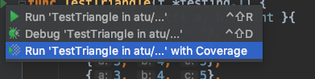

错误、测试、文档
一、defer 调用
确保调用在函数结束时发生
参数在 defer 语句时计算
- defer 先进后出
defer 在何时调用
Open/Close
Lock/Unlock
PrintHeader/PrintFooter
二、测试
传统测试
- 测试数据和测试逻辑混在一起
- 出错信息不明确
- 一旦一个数据出错，测试全部结束
表格驱动测试
- 分离的测试数据和测试逻辑
- 明确的出错的信息
- 可以部分失败
- go 语言可以更容易使用表格驱动测试
|
|
代码 覆盖率

- go tool cover 查看覆盖报告
性能测试
|
|
go test -bench
go test -bench . -cpuprofile
go tool pprof cpu.out /web / quit 查看性能消耗
生成文档
- 用注释写文档
- 在测试中加入 Example
使用 go doc/godoc 来查看/生成文档
go doc file.go
- godoc -http :6060 网络文档 localhost:6060